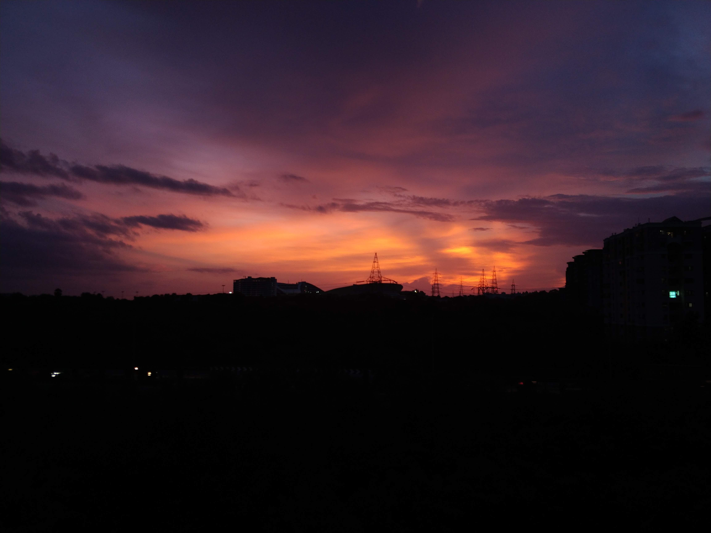
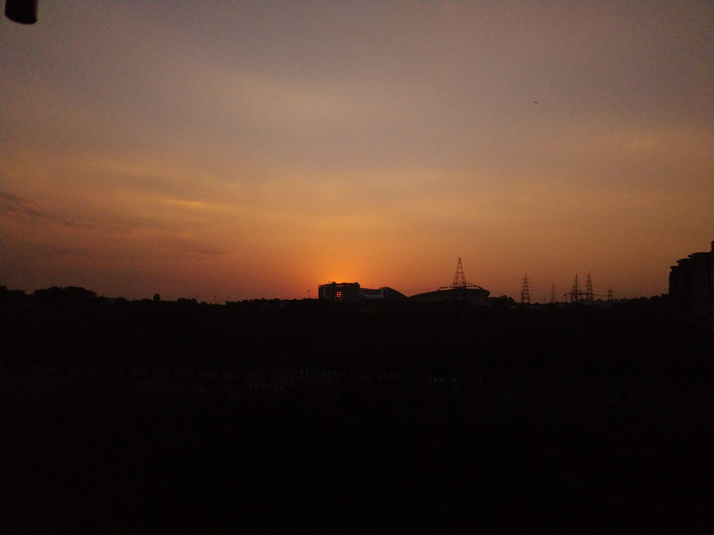
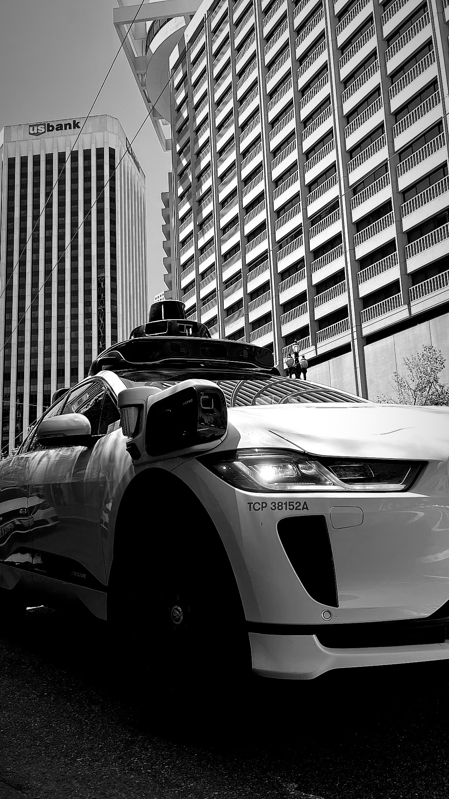

About
Hi! I'm Sreeharsha Paruchuri, a graduate student at the Robotics Institute
at Carnegie Mellon
University where I'm pursuing a Master of Science in Robotics Systems Development degree.
Previously, I earned my undergraduate degree in Electronics and Communication Engineering at
the International Institute of Information Technology -
Hyderabad, where I was also a researcher at the Robotics Research Center and the Cognitive Science Lab.
My journey in Robotics has primarily been driven by a deep curiosity to explore diverse
fields and work on systems that build upon inter-disciplinary domain knowledge.
My undergraduate degree gave me a platform that enabled me to explore a variety of research
problem statements in
domains such as Robotics, Computational Social Science and Computer Vision which gave me
insights into the multitude of ways a problem can be decomposed and understood.
Drawing from a rich tapestry of over two years of immersion in industry-driven robotics
research, mostly in Robot Path Planning and Navigation using Reinforcement Learning, I have
worked with a
plethora of technologies, collaborated with researchers from various backgrounds, and driven
projects from inception to impactful publications or practical implementation.
Currently, as a graduate student, I am looking to specialize in Artificial Intelligence
based systems, potentially with applications in Robotics where I will look for opportunities
to call upon my diverse experiences to contribute in a unique way. The unique construct of
the MRSD program at CMU also lends itself to growing as a formidable
team player through courses like Systems Engineering and Project Management as well as an
individual with a keen eye for business opportunities via its business electives offered in conjunction with CMU's Tepper School of Business.
I am profoundly inspired by Steve Jobs, Ratan Tata and Elon Musk for their remarkable journeys and what they've stood for.
Thus, my ideal long term objective of infusing embodied intelligence with cognitive reasoning -
an ambition to simplify intricate tasks and supplement human creativity, is ultimately driven by the goal of championing social welfare.
All in all, I look forward to being a part of endeavors that help me grow as an individual and I can't wait to see where this journey takes me next :)
Fun Fact: My Erdős number is four.
Experience
Published researcher with 2+ years in AI, robotics, and multimodal perception.
Specializing in SLAM, navigation, and foundation-model-driven vision systems.
From IIIT-H to CMU — advancing from deep technical roots to cutting-edge robotics research.
Bridging AI innovation with real-world deployment in high-velocity environments.
Where research rigor meets scalable, production-ready engineering.
Major Projects
The only problem without a solution is an improperly phrased one.
Do check out my GitHub for more projects / codes.
Dense Stero Reconstruction in real-time
Given a set of stereo images from the KITTI dataset, we undistort and rectify the stereo pair. We employ epipolar geometry to find correspondences between the images and then use block-matching to compute a disparity map for each stereo pair. Poses are estimated using ORB-SLAM 3 and the sequence is registered and visualized as a point cloud and an octomap.
Neural Machine Translation
Comparing an LSTM and GRU based Bahdanau Attention architecture (as described in this paper ) for a popular NLP Sequence2Sequence task of Machine Translation. Both approaches make use of the ADAM optimizer. The resulting English to Hindi translation is evaluated using the BLEU score.
Pose-Graph Optimization
This project deals with a popular backend optimization framework for SLAM techniques . This SLAM backend uses information from the frontend to model the evolution of the robot in the enviornment as a graph. A non-linear least squares optimization is done using the jacobian of residuals which includes weighted loop-closures. Iteratively, an optimal pose-graph is solved for. A paper on the Past, Present and Future of SLAM is discussed.
Artpark Robotics Challenge
Finished as runners up this nation-wide competition which called forth a seamless integration of computer vision, navigation, dynamics and control algorithms in a modular software stack. Contributed to the computer vision algorithm to detect trash items and a trash can in real time using data from a RGB-D stereo camera. Used the navigation stack in ROS to communicate waypoint messages to the multiple nodes and SLAM backend.
Teaching
If you want to master something, teach it
These are words from the legendary Richard Feynman, a person who profoundly motivates me to
find joy in learning something new with every experience. I have have been fortunate enough
to have the opportunity to be a proponent of knowledge by working alongside Professors as a
Teaching Assistant for multiple courses at IIIT, Hyderabad. Not only does teaching
strengthen your conceptual understanding of a topic, but it is a chance to be helpful by
giving back.
I was able to contribute to the following courses by
teaching, guiding and evaluating students by holding tutorial sessions and setting
assignments.
Frames
To be honest, I was at the right place at the right time







Blogs
I never considered myself much of a writer (just ask my high school english teachers), but
I've always had a profound love for reading - whether it's fiction or non-fiction. There's
something magical about getting lost in a book, stepping into someone else's shoes, and
experiencing their world, full of triumphs and sorrows. It opens your mind to new
perspectives and lessons.
My appreciation for writing came unexpectedly when I was invited to be a panelist for a
moderated talk. That experience sparked a newfound passion for storytelling and crafting
thoughtful, well-researched opinions. As a writer and editor for Ping! - the independent
student media body of IIIT-H - I found a rewarding space to explore and share that passion.
As an editor for the MRSD Newsletter at
CMU, I look to use my experience in writing and managing a club to promote readership of the
newsletter not just amongst students, but to prospective recruiters too.
A couple of my most recent articles:
The
Psychology Behind Why Humans Find it Hard to Stay Home : A short feature on how
humans have come to be the social creatures that we are today and relate that to how
lockdown has left most of us in a state of lassitude.
An Online
Felicity: Exploring challenges and possibilities : With the outbreak of COVID-19
immuring students to their houses, we investigate possibilities as to how Felicity (the
annual cultural fest of IIIT-H) could shift online.